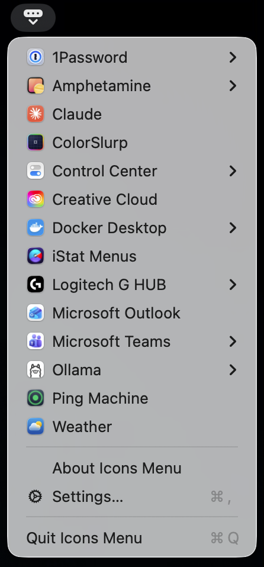
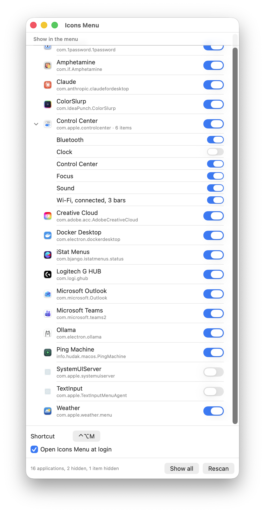

macOS 14+ · Apple silicon · v0.5
Every menu bar item.
Even the ones you can’t see.
Menu bar utilities have no Dock icon, no main menu and no window to bring forward — their status item is the only way in. Once the bar overflows, macOS parks the surplus off-screen and those apps go quiet. Icons Menu lists them all in one dropdown and reaches them through the Accessibility API, so where an icon sits stops mattering.
IconsMenu-0.5.dmg · 531 KB · all releases
Narrow this window: the strip above loses icons from the left, the same way your bar does.

One row per application
Alphabetical, grouped the way the bar is owned. Control Center's six items collapse into one submenu instead of filling a third of the dropdown.
Menus mirrored, not clicked
A row with a chevron opens that application's own menu, read straight from it. No rows invented here, no flash of the real icon opening.
⌃⌥M
A system-wide shortcut pops the menu at the pointer, so the icon's own position never enters into it. Record a different one in Settings.
Hide what you never use
Switch off a whole application, or one item inside it. The menu is rebuilt on every open, so a switch takes effect immediately.
No screen recording
Rows show the owning app's icon rather than a picture of the menu bar, which is what keeps this clear of asking for screen capture.
Opens in ~110 ms
Nothing is scanned while the menu is on screen. A background scan keeps the tree warm, with every Accessibility message bounded at 100 ms.
Settings
A list of what's up there, and a switch for each.
One row per application. An app contributing more than one item expands, with a switch per item inside — one switch for all of Control Center, or a way to drop just the two you never open.
Applications are remembered by bundle ID; items by their ordinal within the app, which is the only identity most of them have. Hiding an app disables its item switches rather than clearing them, so switching it back on restores what you had.
The footer counts what is hidden and offers Show all — the way back for anything whose application has since quit.

Getting it running
-
01 · Install
Open the DMG and drag Icons Menu to Applications.
-
02 · Open it once by hand
The build is signed ad hoc rather than with an Apple Developer ID, so macOS refuses the first launch. Right-click it in Applications, choose Open, confirm. Once only.
-
03 · Grant Accessibility
Icons Menu asks on first launch. Without it the dropdown is blank — every application reports an empty menu bar to an untrusted process.